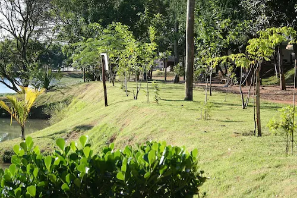

Hortolândia, localizada no interior de São Paulo, é um exemplo de crescimento e transformação urbana. Conhecida pelo seu forte polo tecnológico e industrial, a cidade se destaca por oferecer uma infraestrutura moderna que atrai empresas de grande porte, mantendo, ao mesmo tempo, um ambiente acolhedor para seus moradores. Viver aqui é presenciar uma evolução constante, onde a inovação se mistura ao cotidiano de uma comunidade vibrante e em pleno desenvolvimento.
O Parque Socioambiental Irmã Dorothy Stang é um dos tesouros mais valiosos de Hortolândia e um refúgio de tranquilidade para a população. Com suas trilhas cercadas por áreas verdes preservadas, o espaço convida à prática de exercícios ao ar livre e ao lazer em família. O parque não é apenas um local de recreação, mas também um símbolo de consciência ambiental e bem-estar, proporcionando um respiro necessário em meio ao dinamismo da vida urbana paulista.
